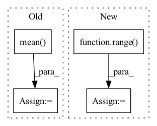

Pattern ID :1136
Before Change
eps = self.eps
loss = - target * torch.log(input + eps) - (1 - target) * torch.log(1 - input + eps)
loss = loss.squeeze(dim=1).mean(dim=1)
if batch_mean:
loss = loss.mean(dim=0)
After Change
loss = loss.sum(dim=self.class_dim)
n_dims = loss.dim()
dim = tuple(range( 1, n_dims) )
if reduction == "mean":
loss = loss.mean(dim=dim)In pattern: SUPERPATTERN
Frequency: 3
Non-data size: 4
Instances Fragment ID: 4091838
Project Name: tky823/dnn-based_source_separation
Commit Name: 56f95a42611aeaeb3499f097d347a17787656474
Time: 2021-12-04
Author: delta9guitar97@gmail.com
File Name: src/criterion/entropy.py
M Class Name: CrossEntropy
N Class Name: CrossEntropy
M Method Name: forward(4)
N Method Name: forward(4)
M Parent Class: nn.Module
N Parent Class: nn.Module
M File Name: src/criterion/entropy.py
N File Name: src/criterion/entropy.py
M Start Line: 44
M End Line: 47
N Start Line: 55
N End Line: 69
Before Change
eps = self.eps
loss = - target * torch.log(input + eps) - (1 - target) * torch.log(1 - input + eps)
loss = loss.squeeze(dim=1).mean(dim=1)
if batch_mean:
loss = loss.mean(dim=0)
After Change
loss = - target * torch.log(input + eps) - (1 - target) * torch.log(1 - input + eps)
n_dims = loss.dim()
dim = tuple(range( 1, n_dims) )
if reduction == "mean":
loss = loss.mean(dim=dim) Fragment ID: 4091839
Project Name: tky823/dnn-based_source_separation
Commit Name: 56f95a42611aeaeb3499f097d347a17787656474
Time: 2021-12-04
Author: delta9guitar97@gmail.com
File Name: src/criterion/entropy.py
M Class Name: BinaryCrossEntropy
N Class Name: BinaryCrossEntropy
M Method Name: forward(4)
N Method Name: forward(4)
M Parent Class: nn.Module
N Parent Class: nn.Module
M File Name: src/criterion/entropy.py
N File Name: src/criterion/entropy.py
M Start Line: 22
M End Line: 23
N Start Line: 21
N End Line: 34
Before Change
if self.proj is not None and self.pre_proj:
x = self.proj(x)
x = x.mean( -2) / x_len.float().unsqueeze(-1)
if self.proj is not None and not self.pre_proj:
x = self.proj(x)After Change
x = self.pre_proj(x)
if x_len is not None:
x = [x[b, : x_len[b]].mean(0) for b in range( len(x)) ]
x = torch.stack(x, dim=0)
else:
x = x.mean(1)
if self.post_proj is not None:
x = self.post_proj(x)
return x
Fragment ID: 4091834
Project Name: atosystem/speechclip
Commit Name: b2d7d1450922b5f68626bcc7751faf4feca14ed5
Time: 2022-03-19
Author: b06901020@ntu.edu.tw
File Name: avssl/module/pooling.py
M Class Name: MeanPoolingLayer
N Class Name: MeanPoolingLayer
M Method Name: forward(3)
N Method Name: forward(3)
M Parent Class: nn.Module
N Parent Class: nn.Module
M File Name: avssl/module/pooling.py
N File Name: avssl/module/pooling.py
M Start Line: 22
M End Line: 28
N Start Line: 46
N End Line: 58